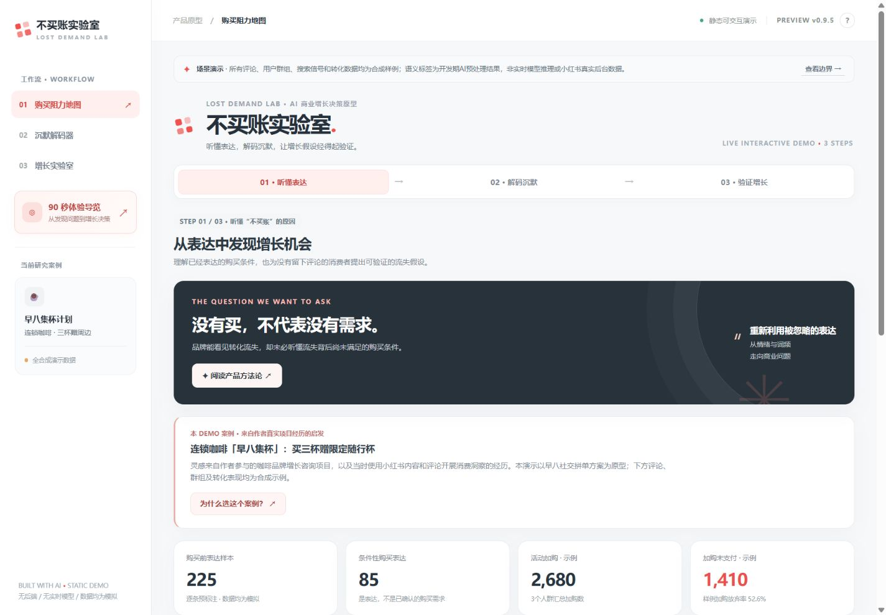
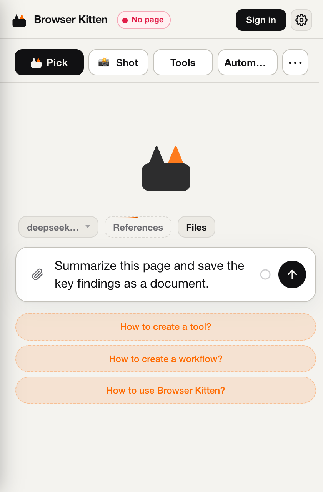

技术带来新答案，需求决定能走多远
BrowserKitten 让我看到，技术突破能为电商竞品追踪这类工作带来新的解法。但要让产品持续走下去，还需要明确谁真正需要它、在哪个场景反复使用，以及愿意为什么付费。明确的需求与人群、可持续的商业化路径，才是技术可能性转化为产品生命力的根源。这也让我在不买账实验室中，先选定具体商业问题，再寻找技术解法。
从技术先行的创业尝试，到以需求为起点的产品探索。
这些作品记录了我如何选择问题、尝试解法，
也重新判断什么值得做。

03 / COMPANIONSHIP
BROWSER AS RUNTIME ↗BrowserKitten 让我看到，技术突破能为电商竞品追踪这类工作带来新的解法。但要让产品持续走下去，还需要明确谁真正需要它、在哪个场景反复使用，以及愿意为什么付费。明确的需求与人群、可持续的商业化路径，才是技术可能性转化为产品生命力的根源。这也让我在不买账实验室中，先选定具体商业问题，再寻找技术解法。
桌宠把我从记忆与角色设计带到了商业化风险。能做出体验，不代表适合继续投入。把需求、获客、持续运营与治理责任一起评估，才可能决定一个产品值得做到哪一步，也让下一次探索有更清楚的起点。
Chris Trade 是我对 AI-native 工作方式的第一次探索：如果一个对话框，进一步甚至语音，就能完成大部分研究、比较与交易准备，传统软件围绕菜单、页面和手工操作形成的逻辑，是否还必须存在？我想探索的，是让人通过表达意图，持续推进、调整乃至重构一个完整的工作过程。它指向的可能，是生产方式本身的重新组织。
AI 或许不是所有问题的答案。
但时代给了我们：
仅是这样的“可能”，就足以让人心潮澎湃。
回到作品，继续探索↗